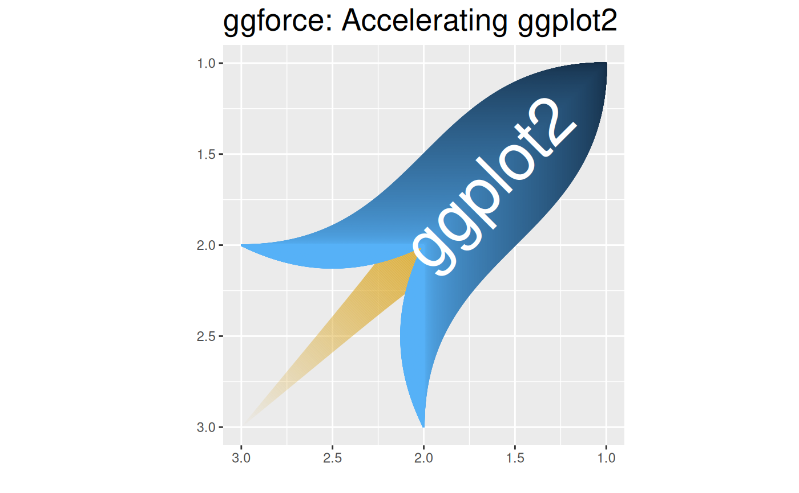

The aim of 'ggplot2' is to aid in visual data investigations. This focus has led to a lack of facilities for composing specialised plots. 'ggforce' aims to be a collection of mainly new stats and geoms that fills this gap. All additional functionality is aimed to come through the official extension system so using 'ggforce' should be a stable experience.
Author
Maintainer: Thomas Lin Pedersen thomasp85@gmail.com (ORCID)
Other contributors:
RStudio [copyright holder]
Examples
rocketData <- data.frame(
x = c(1, 1, 2, 2),
y = c(1, 2, 2, 3)
)
rocketData <- do.call(rbind, lapply(seq_len(500) - 1, function(i) {
rocketData$y <- rocketData$y - c(0, i / 500)
rocketData$group <- i + 1
rocketData
}))
rocketData2 <- data.frame(
x = c(2, 2.25, 2),
y = c(2, 2.5, 3)
)
rocketData2 <- do.call(rbind, lapply(seq_len(500) - 1, function(i) {
rocketData2$x[2] <- rocketData2$x[2] - i * 0.25 / 500
rocketData2$group <- i + 1 + 500
rocketData2
}))
ggplot() + geom_link(aes(
x = 2, y = 2, xend = 3, yend = 3, alpha = after_stat(index),
size = after_stat(index)
), colour = 'goldenrod', n = 500) +
geom_bezier(aes(x = x, y = y, group = group, colour = after_stat(index)),
data = rocketData
) +
geom_bezier(aes(x = y, y = x, group = group, colour = after_stat(index)),
data = rocketData
) +
geom_bezier(aes(x = x, y = y, group = group, colour = 1),
data = rocketData2
) +
geom_bezier(aes(x = y, y = x, group = group, colour = 1),
data = rocketData2
) +
geom_text(aes(x = 1.65, y = 1.65, label = 'ggplot2', angle = 45),
colour = 'white', size = 15
) +
coord_fixed() +
scale_x_reverse() +
scale_y_reverse() +
scale_alpha(range = c(1, 0), guide = 'none') +
scale_size_continuous(
range = c(20, 0.1), trans = 'exp',
guide = 'none'
) +
scale_color_continuous(guide = 'none') +
xlab('') + ylab('') +
ggtitle('ggforce: Accelerating ggplot2') +
theme(plot.title = element_text(size = 20))
